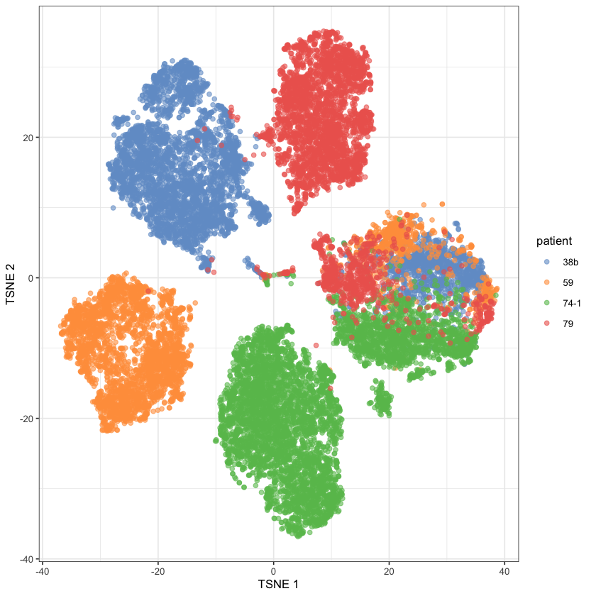
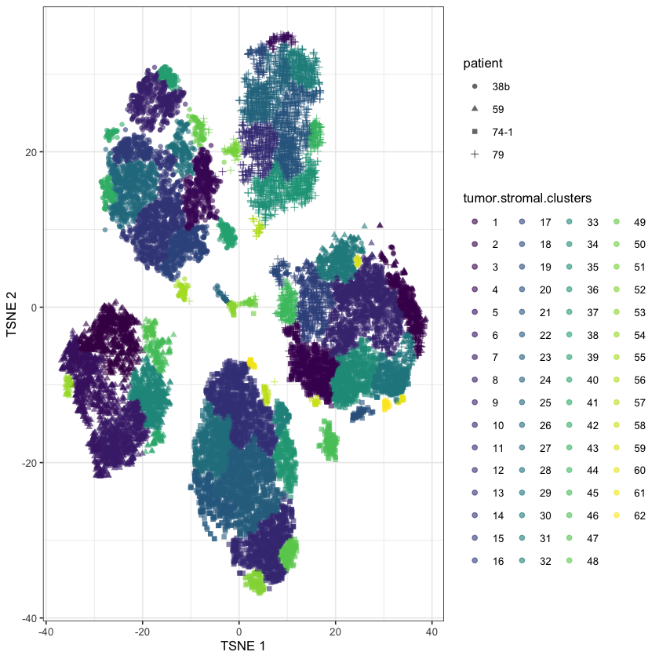
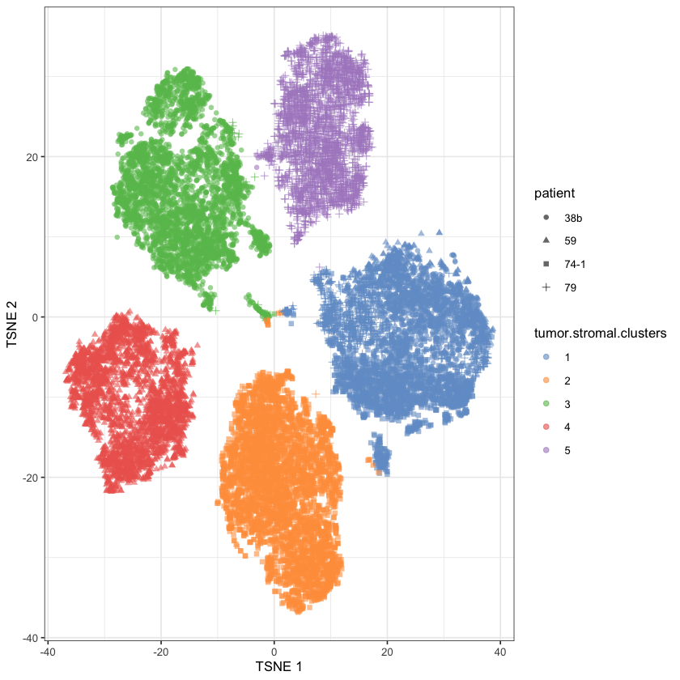
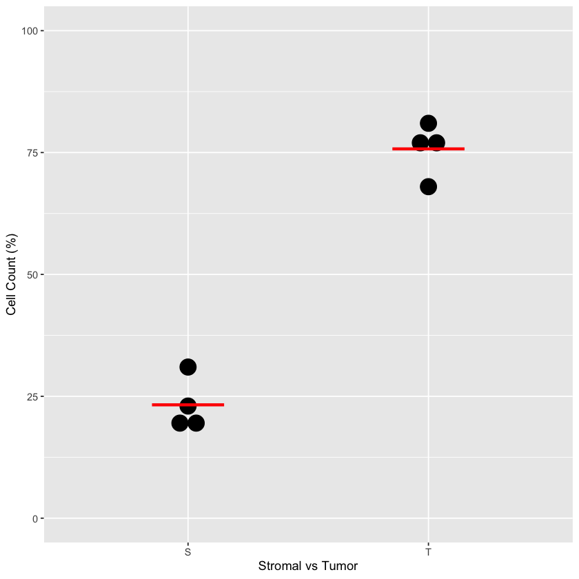
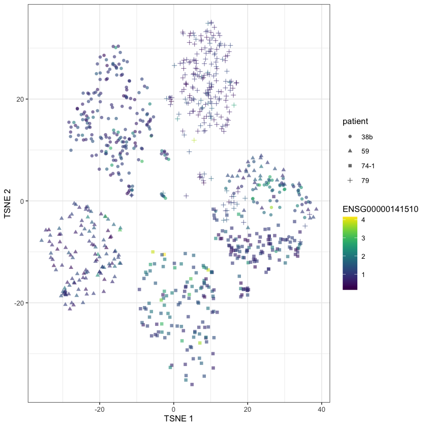
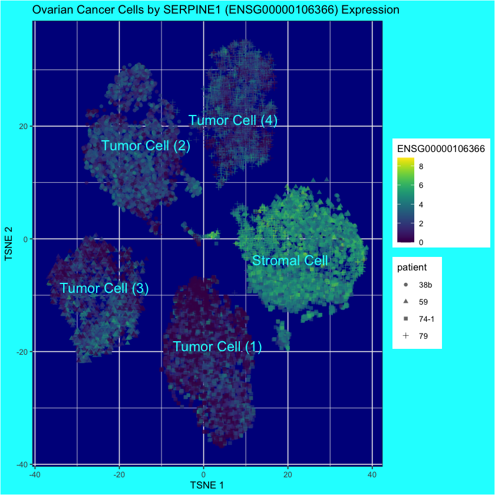

# For reproducibility
set.seed(0)A Living Biobank of Ovarian Cancer – Figure 5b-c
Work
Omics
Useful
Paper Replication
Another scRNA paper
We’ll continue where we left off in the last post, trying to recreate Figure 5 from a paper by Nelson et al. (2020).

This time, we’ll focus on Figure 5b, which entails deciding whether a cell is stromal or tumour.
5b) Dot plots quantitating the percentage of cells in the stromal and tumour clusters. Line represents the mean (N = 4 biological independent samples i.e. n = 1 for each of the four OCMsM).
– Nelson et al. (2020)
Loading the Data
To get started, we’ll load in our data and then create a SingleCellExperiment class from the eponymous SingleCellExperiment package. This is a dependency of scran and scater which were installed in the last post; so we’ll go ahead and the latter two (and we’ll explicitly load SingleCellExperiment this time for clarity).
library(SingleCellExperiment)
library(scran)
library(scater)counts.mat <- Matrix::readMM('./localdata/ovarian-cancer-hgv-counts.mtx')counts.rows <- read.csv('./localdata/ovarian-cancer-hgv-rows.csv', sep=',')[,-1]
counts.cols <- read.csv('./localdata/ovarian-cancer-hgv-columns.csv', sep=',')[,-1]
counts.meta <- read.csv('./localdata/ovarian-cancer-hgv-metadata.csv', sep=',')[,-1]rownames(counts.mat) <- counts.rows
colnames(counts.mat) <- counts.colsFrom documentation, it seems like the convention is to abbreviate SingleCellExperiment as sce, so we’ll name our dataovarian.sce.
ovarian.sce <- SingleCellExperiment(
assays=list(counts=counts.mat),
)# Add patient metadata
ovarian.sce$patient <- counts.meta$Sample.Characteristic.individual.# Take a peak at internal structure
ovarian.sceclass: SingleCellExperiment
dim: 6454 18757
metadata(0):
assays(1): counts
rownames(6454): ENSG00000000457 ENSG00000000460 ... ENSG00000288504
ENSG00000288649
rowData names(0):
colnames(18757): SAMEA6492740-AAACCCACAGTTAGGG
SAMEA6492740-AAACCCACATGTGTCA ... SAMEA6492743-TTTGTTGGTCCTGGTG
SAMEA6492743-TTTGTTGTCAGATTGC
colData names(1): patient
reducedDimNames(0):
mainExpName: NULL
altExpNames(0):While R somewhat markets itself as a functional1 language2, the way data is used tends to look a tad imperative. We’ll be writing a lot of lines that look like:
ovarian.sce <- f(ovarian.sce)Which, yeah, is genuinely functional:
# This does not change `ovarian.sce`
ovarian.sce.f <- f(ovarian.sce)But it feels like it’s functional being used with an imperative mindset 😅. It feels a bit weird to me! But it’s not a big deal.
Let’s take the log of our data. We’ll use logNormCounts from the scuttle package3. This will have the side effect of normalizing our data, but since our data was already normalized I don’t think this will cause a problem? 🤷♂️ I’m just being quick and dirty here to get some experience using the SingleCellExperiment class, we saw an example of manually normalizing in the last blog post so we won’t worry too much here.
ovarian.sce <- scuttle::logNormCounts(ovarian.sce)We can see that we now have a new assay, logcounts, as well as more colData “sizeFactor”. The latter is the value we used to scale counts for normalization.
ovarian.sceclass: SingleCellExperiment
dim: 6454 18757
metadata(0):
assays(2): counts logcounts
rownames(6454): ENSG00000000457 ENSG00000000460 ... ENSG00000288504
ENSG00000288649
rowData names(0):
colnames(18757): SAMEA6492740-AAACCCACAGTTAGGG
SAMEA6492740-AAACCCACATGTGTCA ... SAMEA6492743-TTTGTTGGTCCTGGTG
SAMEA6492743-TTTGTTGTCAGATTGC
colData names(2): patient sizeFactor
reducedDimNames(0):
mainExpName: NULL
altExpNames(0):colData(ovarian.sce)DataFrame with 18757 rows and 2 columns
patient sizeFactor
<character> <numeric>
SAMEA6492740-AAACCCACAGTTAGGG 38b 1.127861
SAMEA6492740-AAACCCACATGTGTCA 38b 1.110393
SAMEA6492740-AAACCCAGTCGCATGC 38b 1.701412
SAMEA6492740-AAACCCAGTCTTTCAT 38b 1.058486
SAMEA6492740-AAACCCATCCGTGTCT 38b 0.586412
... ... ...
SAMEA6492743-TTTGGTTTCATCGTAG 79 1.364770
SAMEA6492743-TTTGTTGCAACCGACC 79 0.249135
SAMEA6492743-TTTGTTGGTCAGTCCG 79 1.374554
SAMEA6492743-TTTGTTGGTCCTGGTG 79 1.357728
SAMEA6492743-TTTGTTGTCAGATTGC 79 1.021525Since Figue 5b is dependent on knowing the tumor and stromal cells, which were deduced using tSNE by Nelson et al. (2020), we’ll get set up with that as well.
# They only ran tSNE on the first 14 dimensions of PCA-transformed data.
# The `assay.type` defaults to "logcounts" but I wanted to be explicit
# since it's not obvious that it would (although it is sensible that it does).
tryCatch(
ovarian.sce <- scran::fixedPCA(
ovarian.sce,
rank=14,
subset.row=NULL,
assay.type="logcounts"
),
error=function(e){print(e)}
)<simpleError in MatrixGenerics:::.load_next_suggested_package_to_search(x): Failed to find a colVars() method for dgTMatrix objects.>This error is a nuisance, but it seems like it’s an issue with dgTMatrix being for dweebs. We should use dgCMatrix instead (thanks internet!).
# Convert assays to dgCMatrix
assay(ovarian.sce, "counts") <- as(
assay(ovarian.sce, "counts"),
"CsparseMatrix"
)
assay(ovarian.sce, "logcounts") <- as(
assay(ovarian.sce, "logcounts"),
"CsparseMatrix"
)ovarian.sce <- scran::fixedPCA(
ovarian.sce,
rank=14,
subset.row=NULL,
assay.type="logcounts"
)ovarian.sce <- scater::runTSNE(
ovarian.sce,
dimred="PCA"
)ovarian.sceclass: SingleCellExperiment
dim: 6454 18757
metadata(0):
assays(2): counts logcounts
rownames(6454): ENSG00000000457 ENSG00000000460 ... ENSG00000288504
ENSG00000288649
rowData names(0):
colnames(18757): SAMEA6492740-AAACCCACAGTTAGGG
SAMEA6492740-AAACCCACATGTGTCA ... SAMEA6492743-TTTGTTGGTCCTGGTG
SAMEA6492743-TTTGTTGTCAGATTGC
colData names(2): patient sizeFactor
reducedDimNames(2): PCA TSNE
mainExpName: NULL
altExpNames(0):plotReducedDim(ovarian.sce, dimred="TSNE", colour_by="patient")
This looks much better than last post… Which probably means I made a mistake with the normalization somewhere there 😬
Identifying stromals
The paper claims that the tumor cells are the ones in the single-patient clusters and the stromal cells are the ones in the multi-patient cluster. To partition them ourself, we need a clustering method! We’ll do scran::clusterCells because scran hasn’t failed us yet.
ovarian.sce$tumor.stromal.clusters <- scran::clusterCells(
ovarian.sce,
use.dimred="TSNE"
)plotReducedDim(
ovarian.sce,
"TSNE",
colour_by="tumor.stromal.clusters",
shape_by="patient"
)
Annoyingly, this is way too many clusters! So we’ll have to tune the parameters a bit.
# This library is needed to specify graph parameters
library(bluster)ovarian.sce$tumor.stromal.clusters <- scran::clusterCells(
ovarian.sce,
use.dimred="TSNE",
BLUSPARAM=bluster::KmeansParam(centers=5)
)
plotReducedDim(
ovarian.sce,
"TSNE",
colour_by="tumor.stromal.clusters",
shape_by="patient"
)
There we go! It seems that either Cluster 1 or 5 is the cluster we want to remove - it’s hard for me to tell because I’m colorblind4. So let’s see how heterogenous the candidate clusters are:
unique(ovarian.sce[,ovarian.sce$tumor.stromal.clusters==1]$patient)
unique(ovarian.sce[,ovarian.sce$tumor.stromal.clusters==5]$patient)- '38b'
- '59'
- '74-1'
- '79'
- '38b'
- '79'
It seems clear that Cluster 1 is our heterogenous cluster, and hence represents our stromal cells.
stromal.index <- ovarian.sce$tumor.stromal.clusters==1Fig 5b
To make Fig 5b, we just need to now know the relative proportions of tumor and stromal cells on a per-patient level.
patient.38b.index <- ovarian.sce$patient=='38b'
patient.59.index <- ovarian.sce$patient=='59'
patient.74_1.index <- ovarian.sce$patient=='74-1'
patient.79.index <- ovarian.sce$patient=='79'# Get raw amount for each patient
stromal.amount <- colSums(data.frame(
patient.38b=patient.38b.index & stromal.index,
patient.59=patient.59.index & stromal.index,
patient.74_1=patient.74_1.index & stromal.index,
patient.79=patient.79.index & stromal.index
))
tumor.amount <- colSums(data.frame(
patient.38b=patient.38b.index & !stromal.index,
patient.59=patient.59.index & !stromal.index,
patient.74_1=patient.74_1.index & !stromal.index,
patient.79=patient.79.index & !stromal.index
))# Calculate the percents
tumor.stromal.data <- data.frame(stromal.amount, tumor.amount)
tumor.stromal.data$patient <- rownames(tumor.stromal.data)
tumor.stromal.data$stromal.percent <- (
tumor.stromal.data$stromal.amount / (
tumor.stromal.data$stromal.amount + tumor.stromal.data$tumor.amount
)
)
tumor.stromal.data$tumor.percent <- (
tumor.stromal.data$tumor.amount / (
tumor.stromal.data$stromal.amount + tumor.stromal.data$tumor.amount
)
)
tumor.stromal.data| stromal.amount | tumor.amount | patient | stromal.percent | tumor.percent | |
|---|---|---|---|---|---|
| <dbl> | <dbl> | <chr> | <dbl> | <dbl> | |
| patient.38b | 1230 | 3976 | patient.38b | 0.2362658 | 0.7637342 |
| patient.59 | 693 | 3003 | patient.59 | 0.1875000 | 0.8125000 |
| patient.74_1 | 1854 | 4111 | patient.74_1 | 0.3108131 | 0.6891869 |
| patient.79 | 849 | 3041 | patient.79 | 0.2182519 | 0.7817481 |
# Format it to work in `geom_dotplot`
tumor.stromal.data.for.dotplot <- data.frame(
percent=as.integer(
c(tumor.stromal.data$stromal.percent, tumor.stromal.data$tumor.percent) * 100
),
tumor.stromal=c("S", "S", "S", "S", "T", "T", "T", "T")
)
tumor.stromal.data.for.dotplot| percent | tumor.stromal |
|---|---|
| <int> | <chr> |
| 23 | S |
| 18 | S |
| 31 | S |
| 21 | S |
| 76 | T |
| 81 | T |
| 68 | T |
| 78 | T |
ggplot(tumor.stromal.data.for.dotplot, aes(x=tumor.stromal, y=percent)) +
geom_dotplot(binaxis='y', stackdir='center') +
ylim(c(0, 100)) +
stat_summary(
fun=mean,
geom="crossbar",
size=0.5,
width=0.3,
color="red"
) +
xlab("Stromal vs Tumor") +
ylab("Cell Count (%)")Bin width defaults to 1/30 of the range of the data. Pick better value with `binwidth`.

Fig 5c
Fig 5c) t-SNE plot from a overlaid with XIST expression
Moreover, cells in two of the distinct clusters did not express XIST (Fig. 5c), consistent with loss of the inactive X chromosome.
– What Nelson et al. (2020) has to say about Fig 5c
We can see that XIST is also known as ENSG00000229807.
any(rownames(ovarian.sce) == "ENSG00000229807")
FALSE
But, uh, it’s not in our dataset. I even checked to see if we filtered it out, but its not there. This is a fairly major issue.
Some replacement genes:
- JPX: ENSG00000225470
- FTX: ENSG00000230590
- TSIX: ENSG00000270641
- EPCAM: ENSG00000119888
- TP53: ENSG00000141510
- MYC: ENSG00000136997
I found some of these by picking apart this quote referring to Fig 4:
This classification was supported by interrogating specific genes, with the tumour cells expressing EPCAM, TP53 and MYC but negative for XIST and TSIX, consistent with loss of the inactive X chromosome (Fig. 4c)
And the rest from wikipedia.
any(rownames(ovarian.sce) == "ENSG00000225470")
any(rownames(ovarian.sce) == "ENSG00000230590")
any(rownames(ovarian.sce) == "ENSG00000270641")
any(rownames(ovarian.sce) == "ENSG00000119888")
any(rownames(ovarian.sce) == "ENSG00000141510")
any(rownames(ovarian.sce) == "ENSG00000136997")
FALSE
FALSE
FALSE
FALSE
TRUE
FALSE
So it seems like, of the data the genes they claim to have been looking at, only one of them is actually in their dataset. I’m sure I’m missing something here, but there’s not much I can do about it. The description of TP53 is “tumor protein p53” according to Ensembl, so it certainly seems relevant!
# Removed all zero counts to prevent clutter
plotReducedDim(
ovarian.sce[,which(assay(ovarian.sce, "counts")["ENSG00000141510",] > 0)],
"TSNE",
colour_by="ENSG00000141510",
shape_by="patient"
)
We can see nothing informative here, it seems.
Maybe we can salvage a pretty graph by looking at the famous BRCA1 (ENSG00000012048) gene?
any(rownames(ovarian.sce) == "ENSG00000012048")
FALSE
No5.
Going Offscript
The fact that XIST does not exist is quite annoying. Let’s find another marker gene to get a pretty plot!
ovarian.sceclass: SingleCellExperiment
dim: 6454 18757
metadata(0):
assays(2): counts logcounts
rownames(6454): ENSG00000000457 ENSG00000000460 ... ENSG00000288504
ENSG00000288649
rowData names(0):
colnames(18757): SAMEA6492740-AAACCCACAGTTAGGG
SAMEA6492740-AAACCCACATGTGTCA ... SAMEA6492743-TTTGTTGGTCCTGGTG
SAMEA6492743-TTTGTTGTCAGATTGC
colData names(3): patient sizeFactor tumor.stromal.clusters
reducedDimNames(2): PCA TSNE
mainExpName: NULL
altExpNames(0):marker.info <- scran::scoreMarkers(ovarian.sce, ovarian.sce$tumor.stromal.clusters)# We should pick a marker for cluster 1,
# because its the only stromal cell cluster
# so we should expect it to have clearly differentially expressed genes.
chosen <- marker.info[["1"]]
rownames(ovarian.sce)[order(chosen$mean.AUC, decreasing=TRUE)[[1]]]
'ENSG00000106366'
ENSG00000106366 is also known as SERPINE1, which is kinda cool.
# For pretty display, let's label each cluster as either
# tumor or stromal
ovarian.sce$tumor.or.stromal <- "Unspecified"
ovarian.sce$tumor.or.stromal[ovarian.sce$tumor.stromal.clusters == 1] <- "Stromal Cell"
ovarian.sce$tumor.or.stromal[ovarian.sce$tumor.stromal.clusters == 2] <- "Tumor Cell (1)"
ovarian.sce$tumor.or.stromal[ovarian.sce$tumor.stromal.clusters == 3] <- "Tumor Cell (2)"
ovarian.sce$tumor.or.stromal[ovarian.sce$tumor.stromal.clusters == 4] <- "Tumor Cell (3)"
ovarian.sce$tumor.or.stromal[ovarian.sce$tumor.stromal.clusters == 5] <- "Tumor Cell (4)"
ovarian.sceclass: SingleCellExperiment
dim: 6454 18757
metadata(0):
assays(2): counts logcounts
rownames(6454): ENSG00000000457 ENSG00000000460 ... ENSG00000288504
ENSG00000288649
rowData names(0):
colnames(18757): SAMEA6492740-AAACCCACAGTTAGGG
SAMEA6492740-AAACCCACATGTGTCA ... SAMEA6492743-TTTGTTGGTCCTGGTG
SAMEA6492743-TTTGTTGTCAGATTGC
colData names(4): patient sizeFactor tumor.stromal.clusters
tumor.or.stromal
reducedDimNames(2): PCA TSNE
mainExpName: NULL
altExpNames(0):plotReducedDim(
ovarian.sce,
"TSNE",
colour_by="ENSG00000106366",
shape_by="patient",
text_by="tumor.or.stromal",
text_colour="cyan"
) +
ggtitle("Ovarian Cancer Cells by SERPINE1 (ENSG00000106366) Expression") +
theme(
panel.background = element_rect(fill = "darkblue"),
plot.background = element_rect(fill = "cyan")
)
This is quite a strong result! Of course, it’s a result that’s already known:
SERPINE1 has been proven to be the most reliable biological and prognostic marker for a variety of cancers, including breast cancer, ovarian cancer, bladder cancer, colon cancer, kidney cancer and non-small cell lung cancer.
– Chen et al. (2022)
But still, it makes a nice plot.
My takeaways from these past two blog posts are:
- “Every cancer is unique” is not just a buzzphrase; the variation between cancers in different people is far greater than the variation between stromal cells between people
- SERPINE1 is a biomarker for cancer
SingleCellExperimentis a nice way to group data- Bioconductor has amazing online resources and a nice suite of packages
I quite liked going offscript at the end. I may delve further into differential expression in the next blogpost, or I might take a look at 16S rRNA sequencing. Not sure.
References
Chen, S., Y. Li, Y. Zhu, J. Fei, L. Song, G. Sun, L. Guo, and X. Li. 2022. “SERPINE1 Overexpression Promotes Malignant Progression and Poor Prognosis of Gastric Cancer.” J Oncol 2022: 2647825.
Nelson, Louisa, Anthony Tighe, Anya Golder, Samantha Littler, Bjorn Bakker, Daniela Moralli, Syed Murtuza Baker, et al. 2020. “A Living Biobank of Ovarian Cancer Ex Vivo Models Reveals Profound Mitotic Heterogeneity.” Nature Communications 11 (1): 822. https://doi.org/10.1038/s41467-020-14551-2.
Footnotes
In the sense of “functional programming”↩︎
Although it does allow for non-functional styles too↩︎
already loaded as a dependency of either
scranorscatter, I have no idea which.↩︎I should have thought of that before making the graph…↩︎
In their defence, BRCA1 is actually in the dataset, it just got filtered out before we got here.↩︎